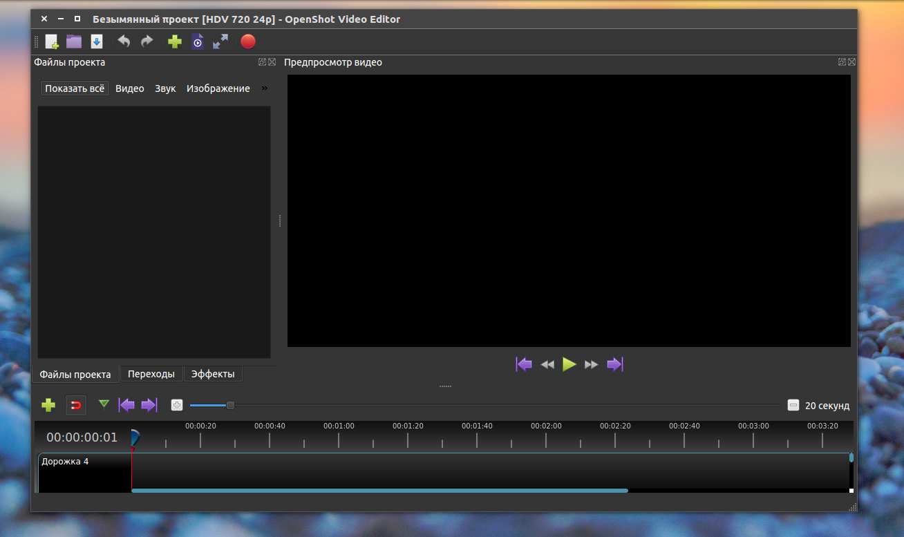

OpenShot

Если вам нужно редактировать видео, то это лучшая программа для Ubuntu, в которой есть почти всё необходимое, а также очень простой интерфейс. OpenShot активно разрабатывается. Программа поддерживает основные функции монтирования видео, добавление титров, подстановки звука, а также основные эффекты. На данный момент доступна версия программы 2.0, используем для ее установки PPA:
sudo add-apt-repository ppa:openshot.developers/ppa
$ sudo apt update
$ sudo apt install openshot-qt